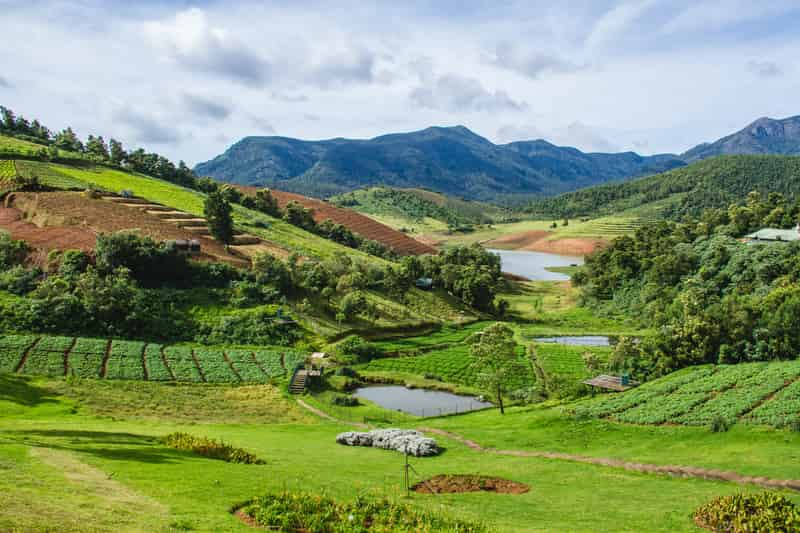

TOP PLACES OF INDIA TO VISIT:

1.ooty - Udhagamandalam, also known as Ooty, is a hill station in the state of Tamil Nadu. The pleasant
climate,
the view of India’s Western Ghats and the peaceful atmosphere make a great tourist place for both family and
friends.
It is famous for its tea plantations, lush gardens, British era bungalows and spicy food. It is usually
crowded during the summer holidays, as many families spend a week or two here. Once a small town, Ooty is
today a buzzing tourist centre with plenty of activity all year round
Best Time: september to December
2. Alleppey - Alleppey is one of the ten most gorgeous locations in the world, according to the National
Geographic
Traveler. Located on the Malabar Coast, the backwaters of Kerala showcase the true beauty of nature.
It is also famous for its Ayurvedic massages. Of course, you cannot miss the houseboat experience and the
lovely Kerala cuisine, especially Malabar Chicken Curry and Puttu.
Best Time: september to December
3.Ladakh - Ladakh, the capital of Leh, is in the eastern parts of Jammu and Kashmir. Ladakh is known for
its pristine lakes, freezing winds, glaciers and sand dunes. It has kept its distance from the modern world
and thank heavens for that.
The most famous tourist attractions here are Pangong Lake, Tso Moriri lake and Leh Palace. There’s also many
adventures to be found here, from white water rafting to mountaineering and trekking.
Best Time: september to January
4.Manali - One of the most popular hill stations in Himachal, Manali offers the most magnificent views of
the Pir Panjal and the Dhauladhar ranges covered with snow for most parts of the year.
Best Time: October to June
5. Coorg - Located amidst imposing mountains in Karnataka with a perpetually misty landscape, Coorg is a
popular coffee producing hill station. It is popular for its beautiful green hills and the streams cutting
right through them. It also stands as a popular destination because of its culture and wonderful people.
Best Time: October to March
6. Andaman - Replete with turquoise blue water beaches and a bit of history, Andaman & Nicobar Islands is a
little slice of paradise tucked around 1,400 km away from the east coast of mainland India. Port Blair, the
capital of this union territory, has a major airport and seaport connected with the rest of t...
Best Time: October to Jun
7. Goa - Lying on the western coast, Goa is India's smallest state and unlike any other, known for its
endless beaches, stellar nightlife, eclectic seafood, world-heritage listed architecture. Spread across just
3,702 km, Goa lies in the Konkan region. It is a far cry from the hippie haven.
Best Time: October to March
8. Udaipur - Udaipur, also known as the City of Lakes, is one of the most visited tourist places in
Rajasthan. Located around stunning water lakes and enveloped by the Aravalli Hills in all directions,
Udaipur is known for its azure lakes, magnificent palaces, vibrant culture and delectable food.
Best Time: October to March
9. Gangtok - Incredibly alluring, pleasantly boisterous and wreathed in clouds - Gangtok, the capital of
Sikkim, is one of the most popular hill stations in India. Lying at the height of 1650 m above sea level,
the town during its bright sunny days offers spectacular views of Mt. Kanchenjunga. Gangtok is a base ...
est Time: Throughout the year
10. Munnar -Popular among honeymooners, Munnar is a hill station in Kerala, located in the Idukki district.
Lying in the Western Ghats at 1600 metres, it is one of the most sought after and visited travel
destinations globally, especially popular amongst honeymooners. Munnar is famous for its tea estates.
Best Time: September to May